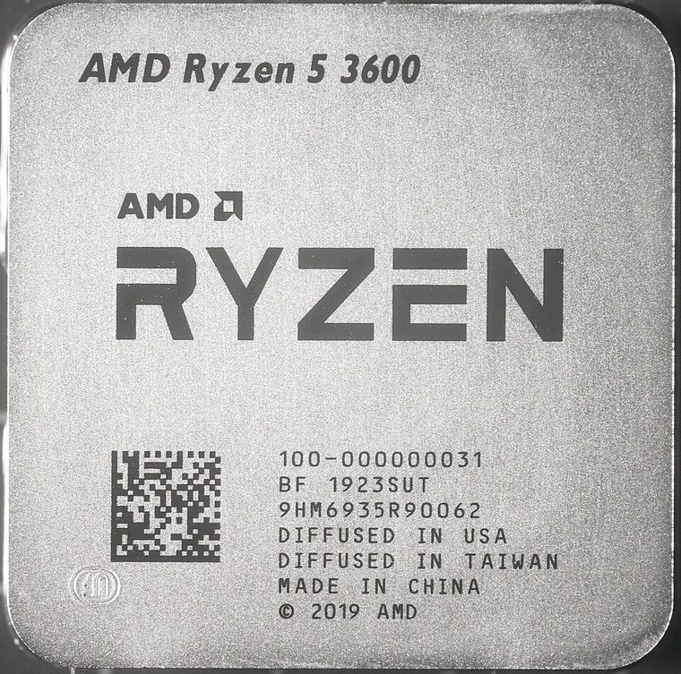

[ INDIVIDUAL CPU COMPONENT ]
AMD Ryzen 5 3600
Zen 2 Matisse, 2019; 6C/12T, 3.6/4.2 GHz, 32 MB L3, 65 W. Model-specific record; confirm the complete part marking before installation.

IDENTIFICATION: AMD Ryzen 5 3600. Product name alone does not establish package, stepping, voltage or firmware compatibility.
Verified model specifications
| Catalog path | Amd → Ryzen desktop processors |
|---|---|
| Model and compute | Zen 2 Matisse, 2019; 6C/12T, 3.6/4.2 GHz, 32 MB L3, 65 W |
| Package / socket | Socket AM4 |
| Compatibility | AM4 BIOS/AGESA supporting exact model; DDR4 |
| Stepping and variants | Record OPN/AGESA; no iGPU |
Compatibility and service
- AM4 BIOS/AGESA supporting exact model; DDR4
- Record OPN/AGESA; no iGPU
- Record cooling, memory, firmware
- Confirm board manual, exact CPU support list, firmware, voltage/power, memory and cooling before use; never force a package.
Service & archival notes
Record cooling, memory, firmware
Photograph package, markings, contacts and date/lot codes before repair. Log host board, BIOS/microcode, memory, cooler, condition, provenance and source revision.
Sources & further reading
- AMD processor specifications — AMD Ryzen 5 3600Manufacturer catalog; search exact model and OPN.
- AMD support documentationManufacturer platform documents; verify motherboard BIOS separately.
- Gamers Nexus — AMD Ryzen 5 3600 CPU Review & Benchmarks: Strong RecommendationIndependent video review; treat as supplementary context, not primary manufacturer documentation.
Manufacturer documents take precedence. Family-level references may not resolve every stepping; verify the marking and motherboard CPU list.